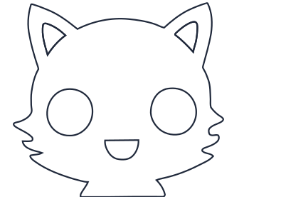
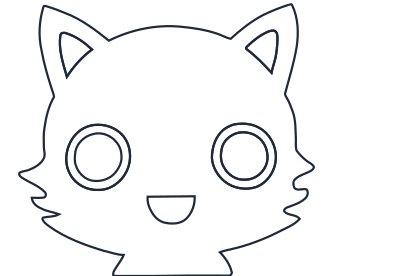
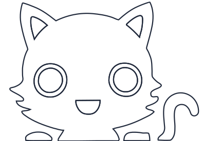
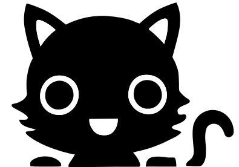

Con mèo
Nguồn: Openclipart · CC0-1.0 · openclipart-friendly-kitten-icon
Bước 1: Đường viền con mèo
Vẽ đường viền con mèo.
Bước 2: Hai tai mèo
Vẽ hai tai mèo.Bước 3: Hai mắt mèo
Vẽ hai mắt mèo.
Bước 4: Mũi mèo
Vẽ mũi mèo.Bước 5: Miệng mèo
Vẽ miệng mèo.
Bước 6: Lông mèo
Vẽ lông mèo.
Hình màu gốc
